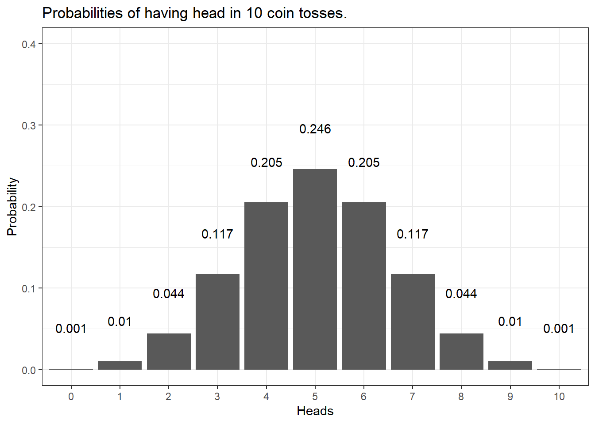
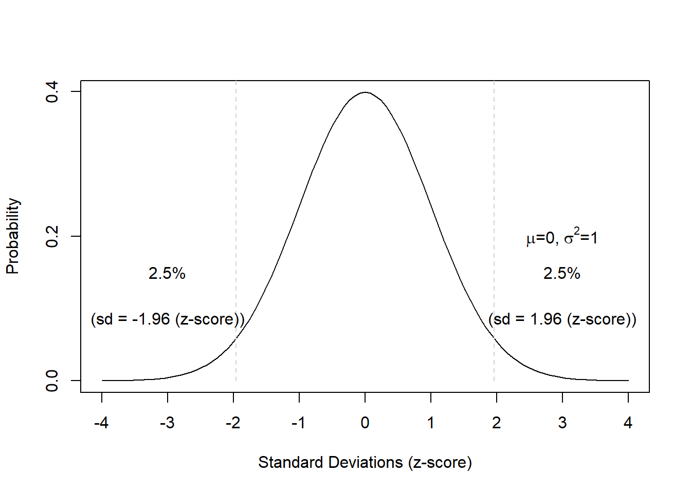
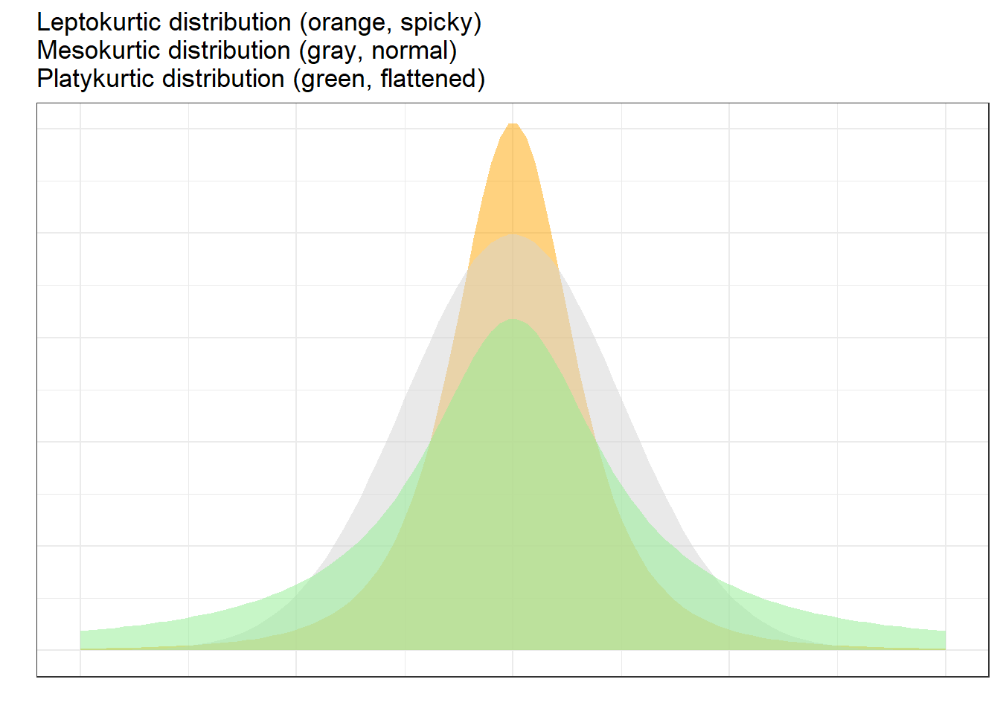
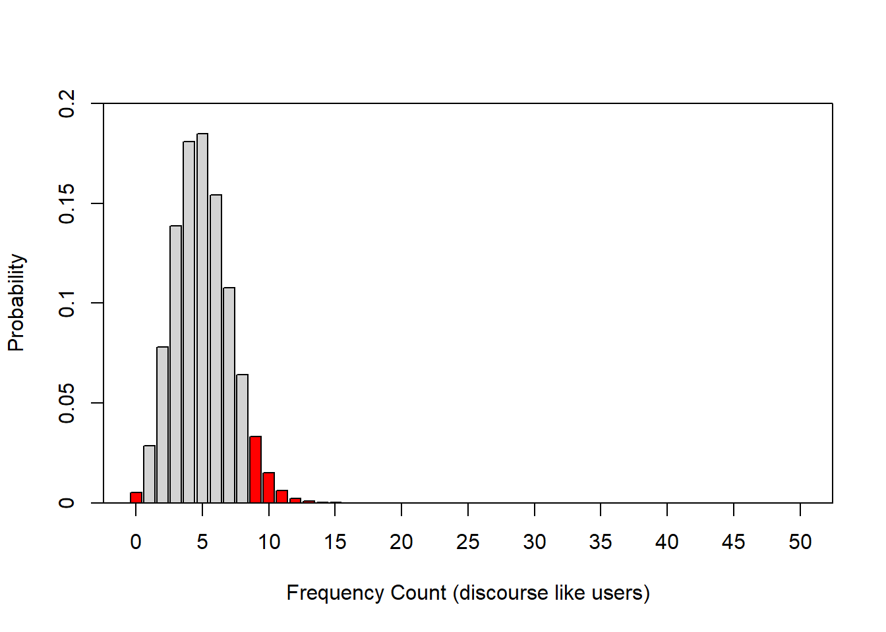

Week 8 Significance and Probability
Hypothesis testing fundamentally builds on probabilities - or more precisely probabilities of error which is an estimation for the likelihood of the H0 being true given the data. In other words, we are interested in how likely the null hypothesis (H0) is. If the null hypothesis (H0) is very unlikely, for instance lower than 5 percent, we can assume that the null hypothesis is not true and thus reject it and instead assume that our test hypothesis (H1) is correct.
This type of probability, the probability ( the probability that the null hypothesis is true) is typically provided in the form of p-values. In a more prosaic (and also coarse-grained, imprecise manner), p-values are an estimate of how likely an outcome is a result of chance. We will delve a little deeper into probabilities and how they relate to hypothesis testing below.
Significance Levels
Before conducting a study, it is advisable to determine the so-called significance level or \(\alpha\) level. This \(\alpha\) level or level of significance indicates how high the p-value can be without having to assume that there is a significant relationship between the variables. It is customary to differentiate between three levels of significance (also called \(\alpha\) levels):
p < .001: highly significant - indicated by three stars (***)
p < .01: very significant - indicated by two stars (**)
p < .05: significant - indicated by one star (*)
Variables with a p value that is smaller than .1 but larger than .05 are sometimes referred to as being marginally significant (+).
Variables that are not significant are commonly referred to or labeled as n.s. (not significant). As we stated above, before we perform a test, we determine a value above which we reject the null hypothesis, the so-called significance level. It’s usually 5%. If the error probability is less than 5% (p <. 05), we reject the null hypothesis. Conclusion: The relationship between the variables is statistically significant. It is important to note here that the H1 (or Test Hypothesis) is correct only because the null hypothesis can be rejected! Statistics can NEVER prove hypotheses but only reject Null Hypotheses which leads us to accept the H1 as preliminary accepted or not-yet-rejected. So all knowledge is preliminary in the empirical sciences.
Probability
In the following, we will turn to probability and try to understand why probability is relevant for testing hypotheses. This is important at this point because statistics, and thus hypothesis testing, fundamentally builds upon probabilities and probability distributions. In order to understand how probability works, we will investigate what happens when we flip a coin. The first question that we will be addressing is “What is the probability of getting three Heads when flipping a coin three times?”.
The probability of getting three heads when flipping a coin three times is .5 to the power of 3: .53 = .5 times .5 times .5 = .125. The probability of getting Heads twice when flipping the coin three times is .375. How do we know?
The probability of getting 3 heads in tree tosses is 12.5 percent:
.53 = .5 * .5 * .5 = .125
The probability of getting 2 heads in tree tosses is 37.5 percent:
.125 + .125 + .125 = 0.375
But how do we know this? Well, have look at the table below.
Toss 1 | Toss 2 | Toss 3 | Heads | Tails | Probabilty |
Head | Head | Head | 3 | 0 | 0.125 |
Head | Head | Tails | 2 | 1 | 0.125 |
Head | Tails | Head | 2 | 1 | 0.125 |
Tails | Head | Head | 2 | 1 | 0.125 |
Head | Tails | Tails | 1 | 2 | 0.125 |
Tails | Head | Tails | 1 | 2 | 0.125 |
Tails | Tails | Head | 1 | 2 | 0.125 |
Tails | Tails | Tails | 0 | 3 | 0.125 |
Given this table, we are in fact, in a position to calculate the probability of getting 100 heads in 100 coin tosses because we can simply fill in the numbers in the formulas used above: .5100 = 7.888609 * 10-31
Okay, let us make a bet..
If head shows, I win a dollar.
If tails shows, you win a dollar.
But given that you know I am cheeky bastard, you do not trust me and claim that I will cheat. But how will you know that I cheat? At which point can you claim that the result is so unlikely that you are (scientifically backed) allowed to claim that I cheat and have manipulated the coin?

So before we actually start with the coin tossing, you operationalize your hypothesis:
H0: The author (Martin) is not cheating (heads shows just as often as tails).
H1: The author (Martin) is cheating (heads shows so often that the probability of the author not cheating is lower than 5 percent)
We now toss the coin and head shows twice. The question now is whether head showing twice is lower than 5 percent.
We toss the coin 3 times. Head shows twice. How likely is it that I do not cheat and head falls more than twice anyway? (In other words, what is the probability p that I win twice or more and not cheat?) If you set the significance level at .05, could you then accuse me of being a cheater?
As you can see in the fourth column, there are three options that lead to heads showing twice (rows 2, 3, and 4). If we add these up (0.125 + 0.125 + 0.125 = 0.375). Also, we need to add the case where head shows 3 times which is another .125 (0.375 + 0.125 = .5), then we find out that the probability of heads showing at least twice in three coin tosses is 50 percent and thus 10 times more than the 5-percent threshold that we set initially. Therefore, you cannot claim that I cheated.
0 Heads | 1 Head | 2 Heads | 3 Heads |
0.125 | 0.375 | 0.375 | 0.125 |

We can do the same and check the probabilities of having heads in 10 coin tosses - if we plot the resulting probabilities, we get the bar plot shown below.

The distribution looks more bell-shaped with very low probabilities of getting 0 or 1 as well as 9 or 10 times heads in the 10 coin tosses and a maximum at 5 times heads in 10 coin tosses. In fact, the probability of having 0 and 10 times head is .001 (or 1 in a 1000 attempts - one attempt is tossing a coin 10 times) - the probability of having heads once and 9 times is.01 or 1 in 100 attempts. In contrast, the probability of having 5 times head is .246 or about 25% (1 in 4 attempts will have 5 heads). Also, we can sum up probabilities: the probability of getting 8 or more heads in 10 coin tosses is the probability of getting 8, 9, and 10 times heads (.044 + .010 + 0.001 = .055 = 5.5 percent).
Calculating the probabilities for three or even 10 coin tosses is still manageable manually but is there an easier way to calculate probabilities? A handier way is have a computer calculate probabilities and the code below shows how to do that in R - a very powerful and flexible programming environment that has been designed for quantitative analysis (but R can, in fact, do much more - this website, for instance, is programmed in R).
The code chunk below calculates the probabilities of having 0, 1, 2, and 3 times head in 3 tosses.
# probabilities of 0, 1, 2 and 3 times head in 3 coin tosses
dbinom(0:3, 3, 0.5)## [1] 0.125 0.375 0.375 0.125The code chunk below calculates the probabilities of having 2 or 3 times head in 3 tosses.
# probabilities of 2 or 3 times head in 3 coin tosses
sum(dbinom(2:3, 3, 0.5))## [1] 0.5The code chunk below calculates the probabilities of having 100 head in 100 tosses.
# probability of 100 times head in 100 coin tosses
dbinom(100, 100, 0.5)## [1] 7.888609e-31The code chunk below calculates the probabilities of having 58 or more times head in 100 tosses.
# probability of 58 to a 100 times head in 100 coin tosses
sum(dbinom(58:100, 100, 0.5))## [1] 0.06660531The code chunk below calculates the probabilities of having 59 or more times head in 100 tosses.
# probability of 59 to a 100 times head in 100 coin tosses
sum(dbinom(59:100, 100, 0.5))## [1] 0.04431304The code chunk below calculates the number of heads in 100 tosses where the probability of getting that number of heads or more sums up to 5 percent (0.05).
# at which point does the probability of getting head
# dip below 5 percent in 100 coin tosses?
qbinom(0.05, 100, 0.5, lower.tail=FALSE)## [1] 58Let’s go back to our example scenario. In our example scenario, we are dealing with a directed hypothesis and not with an un-directed/non-directed hypothesis because we claimed in our H1 that I was cheating and would get more heads than would be expected by chance (\(\mu_{Martin}\) \(>\) \(\mu_{NormalCoin}\)). For this reason, the test we use is one-tailed. When dealing with un-directed hypotheses, you simply claim that the outcome is either higher or lower - in other words the test is two-tailed as you do not know in which direction the effect will manifest itself.
To understand this a more thoroughly, we will consider tossing a coin not merely 3 but 100 times. The Figure below shows the probabilities for the number of heads showing when we toss a coin 100 from 0 occurrences to 100 occurrences.

The next figure shows at which number of heads the cumulative probabilities dip below 5 percent for two-tailed hypotheses. According to the graph, if head shows up to 40 or more often than 60 times, the cumulative probability dips below 5 percent. Applied to our initial bet, you could thus claim that I cheated if head shows less than 41 times or more than 60 times (if out hypothesis were two-tailed - which it is not).

The Figure below shows at which point the probability of heads showing dips below 5 percent for one-tailed hypotheses. Thus, according to the figure below, if we toss a coin 100 times and head shows 59 or more often, then you are justified in claiming that I cheated.

When comparing the two figures above, it is notable that the number at which you can claim I cheated differs according to whether the H1 as one- or two-tailed. When formulating a one-tailed hypothesis, then the number is lower compared with the the number at which you can reject the H0 if your H1 is two-tailed. This is actually the reason for why it is preferable to formulate more precise, one-tailed hypotheses (because then, it is easier for the data to be sufficient to reject the H0).
The Normal Distribution
It is important to note here that the above described calculation of probabilities does not work for numeric variables that are interval-scaled. The reason for this is that it is not possible to calculate the probabilities for all possible outcomes of a reaction time experiment (where time is a continuous variable). In such cases, we rely on distributions in order to determine how likely or probable a certain outcome is.
When relying on distributions, we determine whether a certain value falls within or outside of the area of a distribution that accounts for 5 percent of the entire area of the distribution - if it falls within the area that accounts for less than 5 percent of the total area, then the result is called statistically significant (see the normal distribution below) because the outcome is very unlikely.
The normal distribution (or Gaussian curve or Gaussian distribution) shown in the figure above has certain characteristics that can be derived mathematically. Some of these characteristics relate to the area of certain sections of that distribution. More generally, the normal distribution is a symmetric, bell-shaped probability distribution, used as the theoretical model for the distribution of physical and psychological variables. In fact, many variables in the real world are normally distributed: shoe sizes, IQs, sleep lengths, and many , many more.
The normal distribution is very important because it underlies many statistical procedures in one form or another. The normal distribution is a symmetrical, continuous distribution where
- the arithmetic mean, the median, and the mode are identical and have a value of 0 (and are thus identical);
- 50% of the area under the bell-shaped curve are smaller than the mean;
- 50% of the area under the bell-shaped curve are bigger than the mean;
- 50% of the area under the bell-shaped curve are within -0.675 and +0.675 standard deviations from the mean (0);
- 95% of the area under the bell-shaped curve are within -1.96 and +1.96 standard deviations from the mean (0);
- 99% of the area under the bell-shaped curve are within -2.576 and +2.576 standard deviations from the mean (0).
There is also a very interesting aspect to the normal distribution that relates to the means (averages) of samples drawn from any type of distribution: no matter what type of distribution we draw samples from, the distribution of the means will approximate a normal distribution. In other words, if we draw samples form a very weird looking distribution, the means of these samples will approximate a normal distribution. This fact is called the Central Limit Theorem. What makes the central limit theorem so remarkable is that this result holds no matter what shape the original population distribution may have been.

As shown above, 50 percent of the total area under the curve are to left and 50 percent of the right of the mean value. Furthermore, 68 percent of the area are within -1 and +1 standard deviations from the mean; 95 percent of the area lie between -2 and +2 standard deviations from the mean; 99.7 percent of the area lie between -3 and +3 standard deviations from the mean. Also, 5 percent of the area lie outside -1.96 and +1.96 standard deviations from the mean (if these areas are combined) (see the Figure below). This is important. because we can reject null hypotheses if the probability of them being true is lower than 5 percent. This means that we can use the normal distribution to reject null hypotheses if our dependent variable is normally distributed.

Finally, 5 percent of the area lies beyond +1.68 standard deviations from the mean (see the Figure below).

These properties are extremely useful when determining the likelihood of values or outcomes that reflect certain interval-scaled variables.
EXERCISE TIME!
`
- Create a table with the possible outcomes and probabilities of 4 coin tosses (you can consider the table showing the outcomes of three coin tosses above as a guideline).
Answer
sum(dbinom(4, 7, 0.5)) ## [1] 0.2734375- How likely is it for heads to show exactly 3 times when tossing a coin 7 times?
Answer
sum(dbinom(3, 7, 0.5)) ## [1] 0.2734375- How likely is it for heads to show exactly 2 or 5 times when tossing a coin 7 times?
Answer
sum(dbinom(c(2, 5), 7, 0.5)) ## [1] 0.328125- How likely is it for heads to show 5 or more times when tossing a coin 7 times?
Answer
sum(dbinom(5:7, 7, 0.5)) ## [1] 0.2265625- How likely is it for heads to show between 3 and 6 times when tossing a coin 7 times?
Answer
sum(dbinom(3:6, 7, 0.5)) ## [1] 0.765625`
Non-normality: skewness and kurtosis
Depending on the phenomenon you are investigating, the distribution of that phenomenon can be distributed non-normally. Two factors causing distributions to differ from the normal distribution (that is two factors causing distributions to be non-normal) are skewness and kurtosis.
Skewness
Skewed distributions are asymmetrical and they can be positively or negatively skewed. The tail of a negatively skewed distribution points towards negative values (to the left) which means that the distribution leans towards the right (towards positive values) while the tail of a positively skewed distribution points towards positive values (to the right) which means that the distribution leans towards the left (towards negative values).
Another characteristic of skewed distributions is that the mean and median of a distribution differ. If the median is greater than the mean, the distribution is negatively skewed (the long tail points towards negative values). If the median is smaller than the mean, the distribution is positively skewed (the long tail points towards positive values).
Negatively skewed
- Tail points towards negative values (to the left)
- Median is greater than the mean
Positively skewed
- Tail points towards positive values (to the right)
- Median is lower than the mean

To show how we can calculate skewness (or if a distribution is skewed), we generate a sample of values.
SampleValues <- sample(1:100, 50)
# inspect data
summary(SampleValues)## Min. 1st Qu. Median Mean 3rd Qu. Max.
## 2.00 22.25 48.50 46.54 69.75 100.00We apply the skewness function from the e1071 package to the sample scores to calculated skewness. The skewness function allows to calculate skewness in three different ways:
Type 1 (This is the typical definition used in many older textbooks): \[\begin{equation} g_1 = m_3 / m_2^{(3/2)}. \end{equation}\]
Type 2 (Used in SAS and SPSS): \[\begin{equation} G_1 = g_1 * sqrt(n(n-1)) / (n-2) \end{equation}\]
Type 3 (Used in MINITAB and BMDP): \[\begin{equation} b_1 = m_3 / s^3 = g_1 ((n-1)/n)^{(3/2)} \end{equation}\]
All three formulas have in common that the more negative values are, the more strongly positively skewed are the data (distribution leans to the left) and the more positive the values are, the more strongly negatively skewed are the data (distribution leans to the right). Here we use the second formula (by setting type = 2) that is also used in SPSS.
library(e1071)
skewness(SampleValues, type = 2)## [1] 0.0389159If the reported skewness value is negative, then the distribution is positively skewed. If the value is positive, then the distribution is negatively skewed. If the value is lower than -1 or greater than +1, then the distribution can be assumed to be substantively skewed (Hair et al. 2017).
Kurtosis
Another way in which distributions can differ from the normal distribution relates to the thickness of the tails and the spikiness of the distribution. If distributions are bell-shaped like the normal distribution, they are called mesokurtic. If distributions are symmetrical but they are more spiky than the normal distribution, they are called leptokurtic. If symmetrical distributions are flatter and have bigger tails than the normal distribution, the distributions are called platykurtic.

To show how we can calculate kurtosis (or if a distribution suffers from kurtosis), we apply the kurtosis function from the e1071 package to the sample scores we generated above /when we calculated skewness).
kurtosis(SampleValues)## [1] -1.318594As the kurtosis value is positive, the distribution is leptokurtic (if it were negative, the distribution would be platykurtic). As a rule of thumb, values greater than +1 indicate that the distribution is too peaked while values lower than –1 indicate that the distribution is substantively platykurtic (Hair et al. 2017, pp61).
The kurtosis score can thus be interpreted as follows:
A values of 0 means that the distribution is perfectly mesokurtic with Values between -0.5 and 0.5 suggesting that the distribution is approximately mesokurtic
Values between -0.5 and -1 mean that the distribution is moderately platykurtic with values smaller than -1 indicating that the distribution is platykurtic.
Values between 0.5 and 1 mean that the distribution is moderately leptokurtic with values greater than 1 indicating that the distribution is leptokurtic
The Binomial Distribution
A distribution which is very similar to the normal distribution is the “binomial distribution”. The binomial distribution displays the probability of binary outcomes. So, in fact, the distribution of the coin flips above represents a binomial distribution. However, the binomial distribution cane be (as above in case of the coin flips) but does not have to be symmetric (like the normal distribution).
To illustrate this, let us consider the following example: we are interested in how many people use discourse like in Australian English. We have analyzed a corpus, for instance the Australian component of the International Corpus of English and found that 10 percent of all speakers have used discourse like. In this example, the corpus encompasses 100 speakers (actually the the spoken section of the Australian component of the ICE represents more than 100 speakers but it will make things easier for us in this example).
Now, given the result of our corpus analysis, we would like to know what percentage of speakers of Australian English use discourse like with a confidence of 95 percent. Given the corpus study results, we can plot the expected binomial distribution of discourse like users in Australian English.

The bar graph above shows the probability distribution of discourse like users in Australian English. The first thing we notice is that the binomial distribution is not symmetric as it is slightly left-skewed. If we would increase the number of draws or speakers in our example, the distribution would, however, approximate the normal distribution very quickly because the binomial distribution approximates the normal distribution for large N or if the probability is close to .5. Thus, it is common practice to use the normal distribution instead of the binomial distribution.
The bar graph below also shows the probability distribution of discourse like users in Australian English but, in addition, it is color-coded: bars within the 95 percent confidence interval are lightgray, the bars in red are outside the 95 percent confidence interval. In other words, if we repeated the corpus analysis, for instance 1000 times, on corpora which represent speakers from the same population, then 95 percent of samples would have between 1 and 8 discourse like users.

In addition to the normal distribution and the binomial distribution, there are many other distributions which underlay common procedures in quantitative analyses. For instance, the t- and the F-distribution or the Chi-distribution. However, we will not deal with these distributions here.